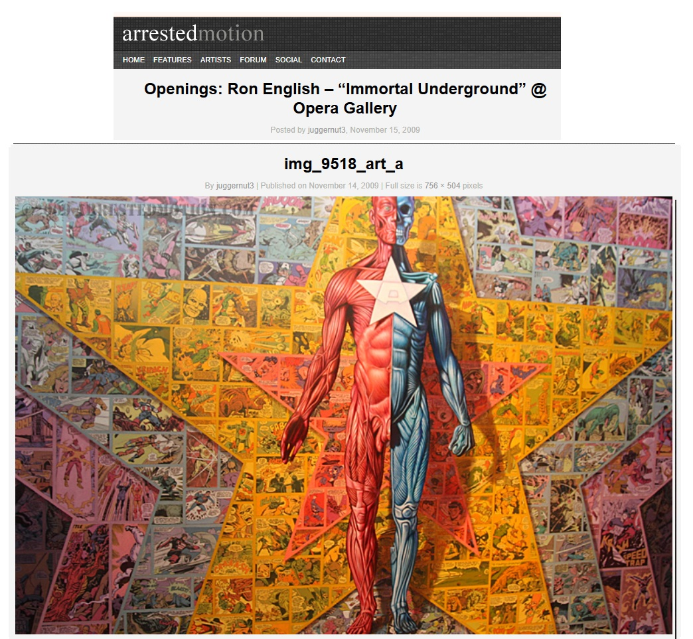
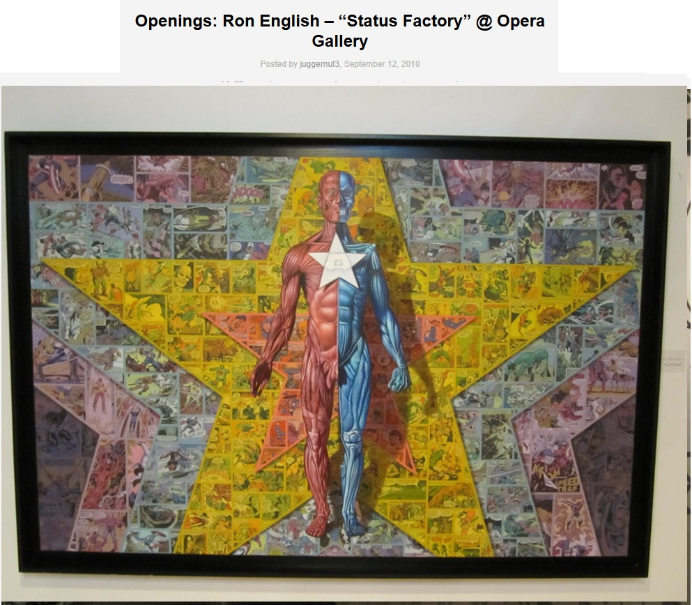
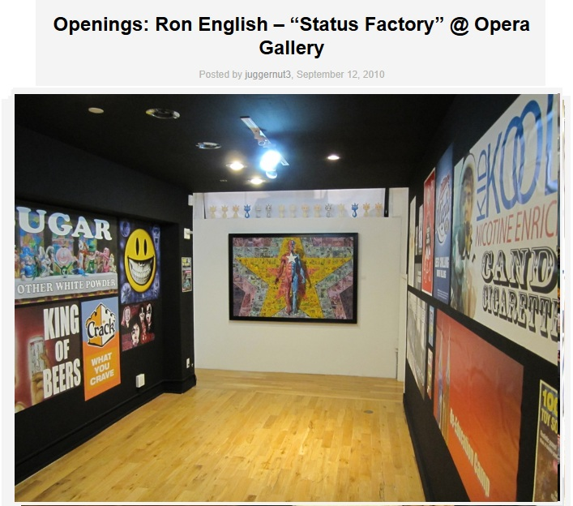
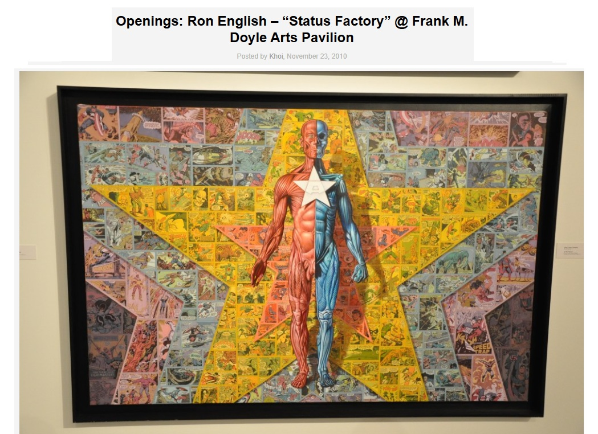
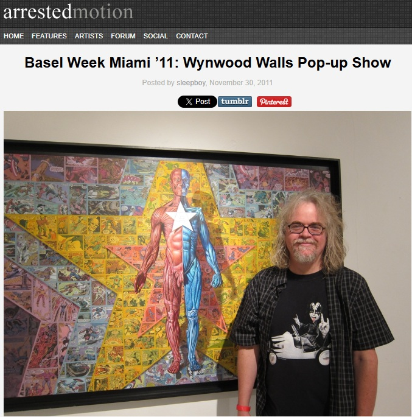

Exhibitions
Immortal Underground, Opera Gallery, New York, New York, US, November 2009.
Status Factory, Opera Gallery, New York, New York, US, September 12–October 29, 2010.
Status Factory – The Art of Ron English, Frank M. Doyle Arts Pavilion (Orange Coast College), Costa Mesa, California, US, November 12–December 17, 2010.
Wynwood Walls Pop-up Show, Wynwood Walls pop-up space, Miami, Florida, US, opened November 29, 2011.
Literature
Ron English, Death and the Eternal Forever (London: Korero Press, 2014), p. 105. ISBN 978-0957664920.
Ron English, Status Factory: The Art of Ron English (San Francisco: Last Gasp of San Francisco, 2014), p. 31. ISBN 978-0867197891.
Ron English, Original Grin: The Art of Ron English (Paris: Cernunnos, 2019), p. 296. ISBN 978-2374950938.
Notes
This work appears in coverage of Immortal Underground at Opera Gallery, available here, accessed April 10, 2026.
It also appears in Arrested Motion’s opening and exhibition photographs for Ron English’s Status Factory at Opera Gallery, available here, accessed April 11, 2026.
It also appears in Arrested Motion’s opening and exhibition photographs for Ron English’s Status Factory – The Art of Ron English at Frank M. Doyle Arts Pavilion, available here, accessed April 14, 2026.
It also appears in Arrested Motion’s recap photographs of the Wynwood Walls Pop-up Show, available here, accessed April 14, 2026.
Ancillary Documentation




